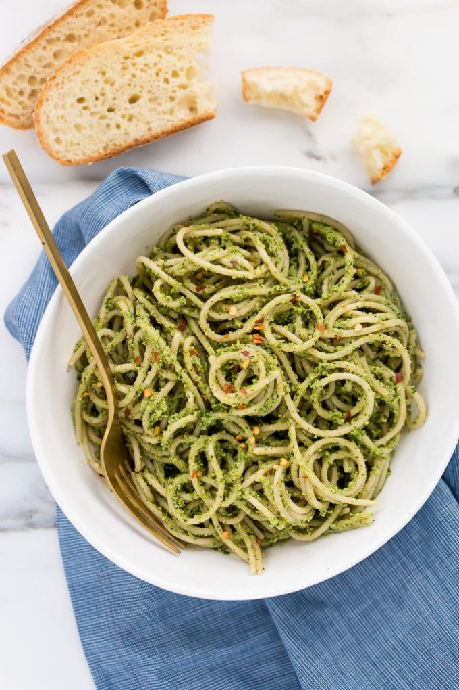

Learn how to make a another tasty gluten-free dish this time: pesto pasta. Another option for those who crave pasta dishes but want to avoid triggering any unpleasant reaction due to gluten.
As usual this is a recipe for beginner friendly but this one can take a little more time compare to the salmon one.
Step 1
To prepare the Genovese pesto, blend the pine nuts and garlic in a blender. Add the washed and dried basil leaves, salt to taste, two ice cubes to preserve the green color, and the extra virgin olive oil without turning off the blender. Add the Parmesan and Pecorino cheeses, and adjust the consistency by adding more olive oil if necessary.
Step 2
Cook the pasta in lightly salted boiling water and drain when it is al dente.
Step 3
Dress with the pesto and if it is too thick, thin it with a glass of the pasta cooking water and serve.